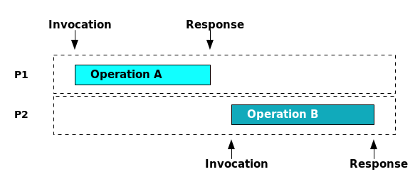
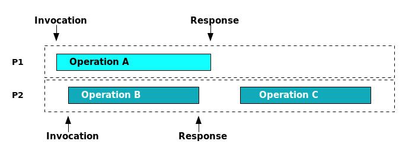
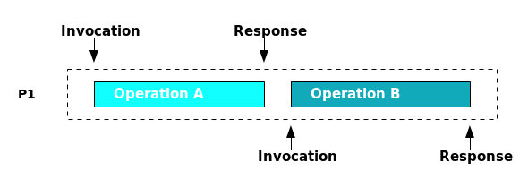
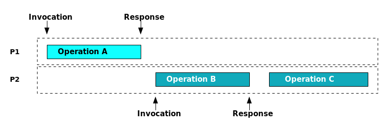

Linearizability: A Correctness Condition for Concurrent Objects
Table of Contents
Introduction
Concurrent objects are data objects that are shared by a set of concurrent processes. These processes are able to invoke operations on them at any time. This of course brings up a lot of questions about how those objects should behave when operations are invoked at about the same time.
What should happen if an operation is invoked on an object when it is still processing a previous operation? What if two operations are invoked at the same time?
Linearizability is a constraint on a system that describe how these concurrent objects can behave in a concurrent environement.
Intuitively, we can say that there are two requirements for concurrent objects in a linearizable system:
- Each operation should appear to take effect instantaneously. If multiple operations are called concurrently, each one will take effect atomically and there will be no cases where partially computed operations are visible to other processes. The order in which these concurrent operations take effect are not entirely clear.
- The order of non concurrent operations should be preserved. If operation A is invoked and completed before operation B is invoked, the fac that A happened before B should be reflected in the system.
The nice thing about these requirements are that if implemented, they allow us to describe acceptable concurrent behavior directly in terms of acceptable sequential behavior. This is a much simpler way to reason about concurrent programs.
Concurrent Objects
The requirements above are pretty vague. To get a better understanding on Linerazability, we need to take a closer look at concurrent objects.
Operations on Concurrent Objects
Shared objects in a linearizable system have a type and a set of possible values. The only means to manipulate the state of an object is through it's operations, and those operations are defined by the type of the object. For example, a FIFO queue object has the enqueue and dequeue operations.
When a client needs to perform an operation on an object, the operation is invoked and then there is an associated response when the operation is completed. To continue with the queue example, when we want to put an item into a queue, we invoke the enqueue operation with the item to be enqueued. When the object sends back the associated response saying that it was a success, we know that the item has been enqueud and the operation was a success. When we want to dequeue an item from a queue, we invoke the dequeue operation, and await the response which contains the item that was dequeued.
Sequential operations
When operations are performed sequentially on an object, there is an explicit order in which the operations were performed and the state of the object at the end of that sequence is fairly easy to reason about.
Let's say there are two operations, A and B, which are invoked on an object. Those operations are sequential when the response to A's invocation is received before the invocation of B. There is an explicit order in which the operations were performed; we can say for sure that A occurred before B.

Figure 1: An illustration of sequential operations performed by two processes, P1 and P2. Although there are two processes performing these operations, Operation A and Operation B are sequential because the response from operation A takes place before the invocation of process B.
Concurrent Operations
Things can get more complicated in a concurrent system however, when the operations are invoked by multiple processes and are interleaved. The operation B being invoked before the response to operation A is received is one simple example of how interleaving can occurr. As a user of the system there is no way to know in which order the operations will take effect on the object, and there is no clear understanding on how the object should behave under these circumstances.

Figure 2: Concurrent operations A and B which are interleaved. If you were an observer of this sequence of events, how would you expect this to behave?
Linearizability
This is where linearizability can be helpful. If the shared object is linearizable, it becomes much easier for a user of the system to understand and reason about how the object will behave in concurrent conditions. It also gives implementors of linearizable objects and systems a way to deem their implementation correct.
So far we've talked about processes, objects, and operations, but before we define linearizability we need to introduce a couple more ideas in order to model a concurrent sequence of operations on a shared object.
Histories
A history is a sequence of operation invocation and response events of a concurrent system. The figures 1 and 2 above are a graphical representation of histories.
A history gives us a way to model what events occurred and when they occured relative to eachother. In addition to modeling the events of an entire system, we can alse use a history to model the operations that occured on a single shared object, or operations invoked from a single process. These are subhistories of a history.
Histories can represent a sequential series of events, and also a concurrent series of events.
Sequential History
An obvious example of a sequential history would be a single processes' subhistory (denoted as H|P). Processes by definition are sequential threads, so once they invoke an operation, they must wait until they receive the associated response.
But as Figure 1 shows, we can also have a sequential history when more than one processes are involved. A history is sequential if the following two conditions are met:
- The first event of a History H is an invocation
- Each invocation is followed by its matching response, and each response is followed by a matching invocation.

Figure 3: A single processes' subhistory, H|P1, which is sequential by definition
Concurrent History
Any history that is not sequential is concurrent. Figure 2 is an example of a concurrent history: the invocation of operation A is followed by the invocation of operation B. This is against condition 2 of the above definition of sequential history, so it must be concurrent.
Intuitively, this is pretty easy to see in Figure 2 because operation B lies within operation A.
Legal Sequential Histories
There's one more important note about histories, and that is defining what a legal sequential history is.
A legal sequential history is a history H in which every object's sequential subhistory is valid. Put another way, all of the objects in the history behave as expected after a sequential sequence of operations have been invoked on it.
As an example, let's take a look at one legal and one illegal sequential history for a FIFO queue, q.
The operations are expressed in the form <x op (args)> for an invocation of the operation op on object x, and <x term(response)> where term is a termination condition and response is a sequence of results.
| Sequential History H1 (legal) | Sequential History H2 (illegal) |
|---|---|
| q Enqueue(x) | q Enqueue(x) |
| q Ok() | q Ok() |
| q Enqueue(y) | q Enqueue(y) |
| q Ok() | q Ok() |
| q Dequeue() | q Dequeue() |
| q Ok(x) | q Ok(y) |
First note that H1 and H2 are both sequential by the definition given above.
It's clear that based on the sequential operations performed on the FIFO queue, the last dequeue operation should have returned x because it was the first item that was enqueued. Since H2 returned y, it is clearly contrary to the semantics of a FIFO queue and is illegal.
To summarize, a legal sequential history is just a sequential history of operations where the objects in the history behave as expected.
Partial Order of Events in a History
Just one last observation to make before we take a look at the definition of linearizability.
If we once again take a look at figure 2, we can see that operations A and B are concurrent. There's no way to know which one of the operations will take effect before the other. But there is an order between operations A and C, and also B and C. A clearly takes effect before C, and B also clearly takes effect before C.
We call that order a partial order on operations.
Because the response of operation A takes place before the invocation of operation C, there is a partial order in history H (denoted as <H) on operations A and C. This relationship can be donated as: A <H C.
Also because the response of operation B takes place before the invocation of operation C, there is a partial order in history H on operations B and C. Again, this relationship is donated as B <H C.
The term partial order does a good job in capturing the idea that although we can't order the entire history (because A and B are concurrent and we don't know the order in which those will take effect), we do at least know the order of some of the events in the history.
Another way to state this, is that the partial order <H captures the "real-time" precidence ordering of operations in H.
(As a side note, if we do know the order of every event in a history, which we do in a sequential history for example, that is called the total order)
The Definition of Linearizable
Now we have covered everything we need to define linearizable. We define it in terms of a history:
A history H is linearizable if it can be extended to some history H′ such that:
L1. H′ is equivalent to some legal sequential history S
L2. <H ⊆ <S
S is called a linearization.
L1 says that even though processes invoked operations concurrently, they act as though they were interleaved as complete operations. Each operation "takes effect" immediately at some point, which is expressed through H′.
L1 also says that H′ is a legal sequential history, so all the objects in the history must behave as expected as if the operations were done sequentially.
L2 says that this apparent sequential interleaving respects any partial orderings of events in a history H.

Figure 4: One possibile linearization, S, of Figure 2. Notice that A <S C and B <S C are both preserved.
Linearizability and Nondeterminism
It's important to point out that nondeterminism is inherent in linearizability. A concurrent history can be extended to many different different linearizations.
This will become clear if we take a look at an example.
Example
Take one more look at Figure 2. If you were observing a system that was not linearizable and tried to think about the possible end state of that history, it would be difficult to do.
But if we look at that history in the context of it in a system that is linearizable, we can actually start to reason about it.
Let's say that operation A and B are both enqueue operations on a FIFO queue, and operation C is a dequeue. Then there are two linearizations that are possible:
| Linearization 1 | Linearization 2 |
|---|---|
| q Enqueue(x) P1 | q Enqueue(y) p2 |
| q Ok() P1 | q Ok() P2 |
| q Enqueue(y) P2 | q Enqueue(x) P1 |
| q Ok() P2 | q Ok() P1 |
| q Dequeue() P2 | q Dequeue() P2 |
| q Ok(x) P2 | q Ok(y) P2 |
So by having a linearizable system, and if we observe the history is Figure 2, we know there are two possibile outcomes, and that they're both correct based on the semantics of a FIFO queue.
Correctness in Operations
One method of testing correctness in sequential objects is through pre and post conditions. TODO: Expound on this. Top of p 464 is where they are first mentioned. This section should be moved somewhere else.
Properties of a Linearizability
There are two properties of linearizability: local and nonblocking.
Locality
A property is local if the system as a whole satisfies a property if each individual object satisfies the property. Linearizability is local.
Locality allows linearizable systems to be constructed in a modular way. Linearizable objects can be implemented, verified, and executed independently. And if we can prove that each of the objects are linearizable, we know that the system as a whole is linearizable.
Nonblocking
Another nice property of linearizability is that a pending invocation of an operation is never required to wait for another pending invocation to complete. Objects in a linearizable system are nonblocking.
This is great for systems where concurrency and real-time response are important.
Sometimes blocking is intended, for example dequeuing an empty queue might block until an item is enqueued. An object being nonblocking does not rule out blocking in these kinds of situations.
Summary
Linearizability is a constraint that can be put on a concurrent system, that allows it to "act" as if it were sequential. Any concurrent operations on an object are atomic and can be viewed as if they happened in sequence. And the order of non-concurrent operations are preserved.
As soon as an operation appears to have happened, that change of state is reflected in the system. This allows observers of the system to reason about the system as if it were sequential.